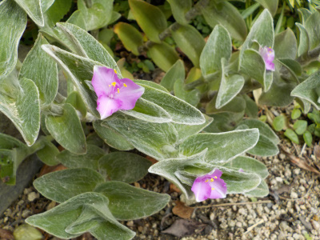
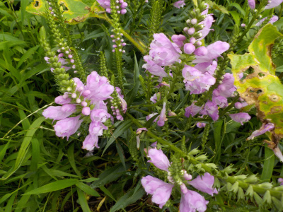
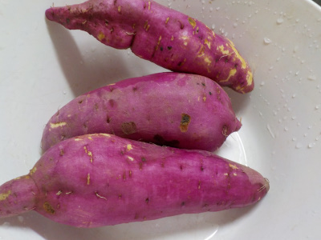
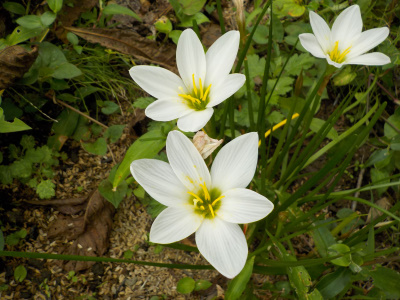
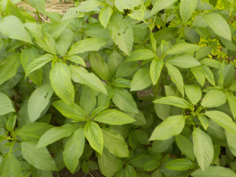
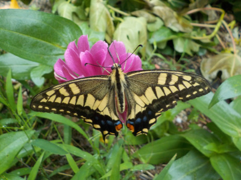
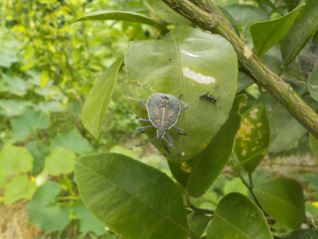

遊びで植物を育てよう
2021/08/29
トラデスカンチアの花が咲きました。

小さい花が咲いていました。
地植えで放置していますが、鉢植えの方がいいみたいな情報がネットにありました。
気が向いたら鉢に植えよう。
【ページTOP】
【8月TOP】
【園芸TOP】
2021/08/21
ハナトラノオが咲きました。

目立っていたので写真を撮りました。
これから花数が多くなったらもっと目立ちそうです。
似た名前で、山によく生えているオカトラノオとはだいぶ違いますね。
【ページTOP】
【8月TOP】
【園芸TOP】
2021/08/21
サツマイモを収獲しました。

美味しそうなサツマイモが採れました。
焼き芋が食べたいと思いますが、暑い時期に焼き芋を作ろうとは思わないです。
簡単にレンジでチンして食べようかな。
【ページTOP】
【8月TOP】
【園芸TOP】
2021/08/21
タマスダレ咲いてました。

水仙に似た感じの花が咲いていました。
調べたらタマスダレって名前のようです。レインリリーともセフィランサスともいうそうです。
名前がいろいろあると、どの名前で覚えようか迷いますね。
【ページTOP】
【8月TOP】
【園芸TOP】
2021/08/15
モロヘイヤを収獲して食べました。

モロヘイヤを収獲して、葉っぱ洗って茹でて細かく刻んで味付けして食べました。
時間が掛かったわりに好きな味じゃない。沢山食べるので味をごまかせないです。
栄養豊富って言われているので食べますが、本当はどうなんでしょうね。
言われているだけだったりして。食物繊維で吸収できなかったりしてってネガティブに考えない方がいいですよね。
【ページTOP】
【8月TOP】
【園芸TOP】
2021/08/13
雨の中、蝶が花に止まってじっとしていました。

雨宿りかな？濡れながら。
近づいても逃げないのでアップなしで写真が撮れました。
無防備ですね。何か理由があるんでしょうね。
【ページTOP】
【8月TOP】
【園芸TOP】
2021/08/08
ミカンにカメムシがいました。

樹液を吸っているのか実を吸っているのかわかりませんが、何か被害にあいそうです。
何て名前のカメムシｓでしょうね。
あまり見ない柄のカメムシな気がします。
【ページTOP】
【8月TOP】
【園芸TOP】
過去の日記
【2024年8月の日記】
【2023年8月の日記】
【2022年8月の日記】
【2021年8月の日記】
【2020年8月の日記】
【2019年8月の日記】
【2018年8月の日記】
【2017年8月の日記】
【2016年8月の日記】
【2015年8月の日記】
【2014年8月の日記】
【2013年8月の日記】
【2012年8月の日記】
【ページTOP】
【8月TOP】
【園芸TOP】
夏場の活動は朝と夕です。
【おいしいものを食べよう。】【たくさん寝よう。】
【ソロ活をしよう!】【季節感のあることをしよう。】【動画視聴はほどほどに。】【当サイトの全てのコンテンツは無断転載禁止です。】